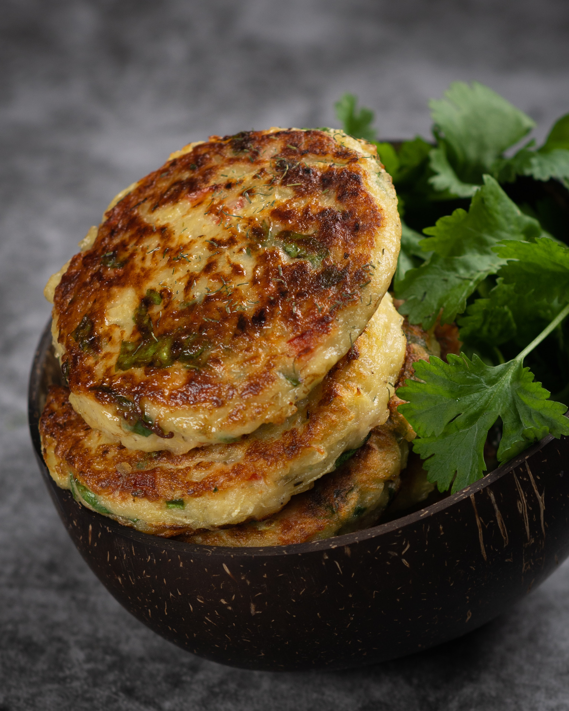

Crispy smashed potatoes
You can never go wrong with potatoes !There is nothing quite satisfying and comforting when it comes to making homemade roasted smashed potatoes. This is a simple recipe made with small baby potatoes which is so easy to prepare, are tender, flavorful. Using dish delicious blend takes this dish to another level. There is no better way to cook them in another way. Hope you all love making this as much as I love making this for my family
Ingredients
- 1.5kg Baby potatoes(skin on)
- 3 Tablespoon olive oil
- 2 Tablespoon dish delicious blend
- 1 Teaspoon crushed Garlic
- 1 Teaspoon Himalayan salt
- Black pepper to taste
- 1 Tablespoon Rosemary leaves
Method
- Preheat oven to 240 degree Celsius
- Wash potatoes and pat dry with paper towel
- In a bowl add potatoes, olive oil, crushed garlic, dish delicious blend, salt and pepper
- Give a good mix with your hands until everything gets incorporated together
- Brush a large baking tray with some olive oil, transfer potatoes on the tray spread them out evenly and cook for 25 to 30 minutes
- Roast until potatoes are crispy and golden all over, make sure to turn and shake potatoes every 10minutes during cooking time
- Once potatoes are done smash them with the help of back of the spoon
- Drizzle some lemon pepper avocado oil and Coriander almond dressing while serving
Zucchini Fritters
Zucchini, carrot fritters are a healthy way of including veggies into the diet. Quick and easy to make these flavorful fritters made with Dish delicious spice blend are packed with flavors and lots of nutrients added through veggies. This makes a delicious and healthy snack or side dish which is grain-free, gluten-free, dairy-free low carb. Win win recipe for all those who love zucchini!
Ingredients
- 4 Medium size zucchini
- 2 Medium size carrots
- 2 Teaspoon Dish Delicious Blend
- 2 Table spoon Chickpea flour
- 2 Table spoon Rice flour
- Salt and Pepper to taste
- Chopped coriander
- Olive oil for brushing
Method
- In a medium size bowl grate zucchini, carrots
- To this add chopped coriander leaves, chickpea flour, rice flour, dish delicious blend, salt and pepper to taste give a good mix, I like to use hands it gives a batter good binding
- No need to add water as carrots and zucchini release its water which helps in binding the mixture together
- Heat the non stick skillet on a low medium flame, brush it with oil
- Pour the mixture with the help of a Tablespoon and carefully spread it out to form a disc shape
- Drizzle oil or just brush oil from all sides, let it cook for 2minutes on each side until golden brown and crispy
- Once done serve it with yogurt dipping and enjoy
Notes
- You can add baby spinach, basil leaves, chopped onions, spring onions and other herbs you like
- You can buy gram flour in any Indian store, its rich in fiber and iron and works great as a binder
- Adding rice flour makes fritters crispy